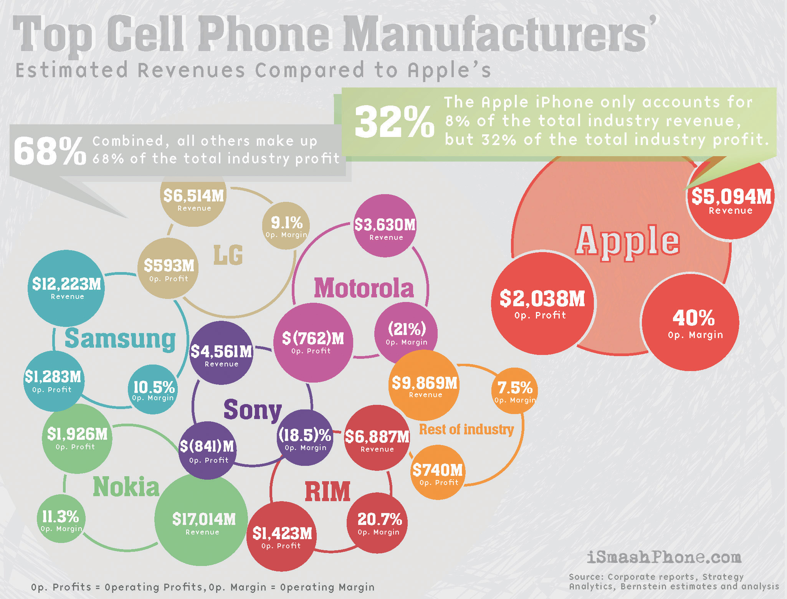
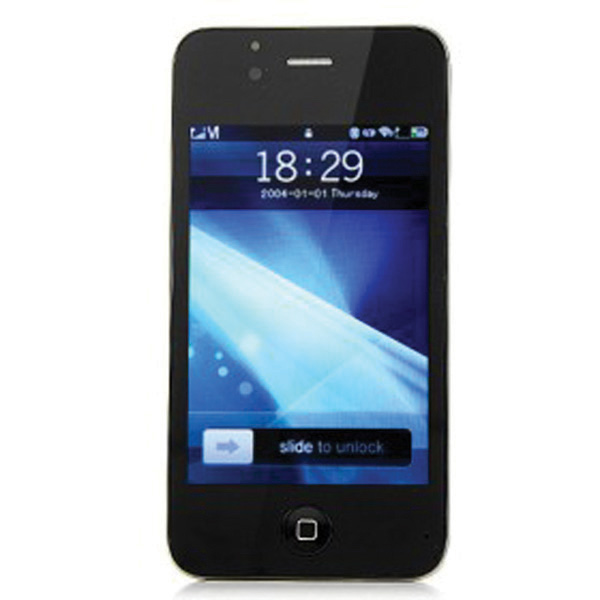

No matter what industry a company operates in, or its size, a company’s intellectual property is often more valuable than its physical assets. While factories and inventory can be rebuilt after a loss, losing control of intellectual property can be ruinous for companies. After reading this chapter, you should be able to apply intellectual property concepts to answer the following questions:
The Apple iPhone 4 is the latest model of Apple’s do-it-all cell phone. Since its introduction in 2007, the iPhone has redefined the “smart phone” segment of the wireless phone industry and left its competitors scrambling to catch up. Its sleek lines, gorgeous full-color display, built-in GPS navigation and camera, visual voice mail, and Web surfing capability (either over Wi-Fi or 3G phone networks) made it an instant hit, with thousands of consumers lining up for hours to have their chance to buy one. Its revolutionary business model, where thousands of software programmers could write small programs called “apps” and sell them on the App Store through Apple’s iTunes software, created a win-win-win business model for everyone who touched the iPhone. For software programmers, it was a win because small, untested, and first-time programmers could “strike it rich” by selling thousands of their apps directly to consumers without having to find a software publisher first. For Apple, it was a win because thousands of talented programmers, not on Apple’s payroll, were developing content for their product and enhancing its appeal. Apple also wins because it collects a percentage fee from every app sold on its iTunes store. And finally, consumers win because they have access to all sorts of creative programs to help them do more on their iPhones than simply make a phone call. The business has been a tremendous success for both Apple and AT&T, the exclusive service provider of iPhones in the United States.
There are quite a few companies in the industry that aren’t doing as well, from Nokia to Motorola to Sony Ericsson. If they wanted to see how Apple makes the iPhone, all they’d have to do is buy one and then take it apart to see its components (a process known as reverse engineeringThe process of tearing down a finished good to its components to figure out how it was designed or manufactured.). Or they could look at the reverse engineering conducted by iSuppli, an independent market intelligence firm.
You can see how iSuppli broke down the components in an iPhone 4 by reading this press release:
iSuppli found out that the bill of material (BOM)A list of components constituting an assembled good., or the breakdown of each component Apple purchased to assemble into an iPhone, is roughly $187.51. The most expensive components are a $27 16GB flash memory module from Samsung, a $28.50 display module that includes the iPhone’s glossy 3.5-inch screen, and a $10 touch screen assembly that includes the touch-sensitive glass on top of the screen.
Apple makes a lot of money selling iPhones. Although the $199 retail price of the 16GB iPhone 4 suggests that Apple makes only about $12 profit per phone, in reality the “cost” of the iPhone is much higher than $199, since each phone is sold with a two-year contract with AT&T service. Industry analysts estimate that AT&T pays Apple approximately $300 for each iPhone sold with an AT&T plan, in return for Apple agreeing not sell the iPhone through any other phone network.M. G. Siegler, “AT&T iPhone Deal Extended to 2010. Did Apple Mortgage Its Future for a Subsidy?” Social Beat, August 1, 2008, http://digital.venturebeat.com/2008/08/01/att-iphone-deal-extended-to-2010-did-apple-mortgage-its-future-for-a-subsidy (accessed September 27, 2010). The result for Apple is staggering profitability, with a $1.21 billion profit reported in the first three months of 2009, much of which driven by iPhone sales.Jim Dalrymple, “Strong iPhone and iPod Sales Drive Apple Profits to $1.21 Billion,” Macworld, April 22, 2009, http://www.macworld.com/article/140162/2009/04/appleearnings.html (accessed September 27, 2010). This chart (Figure 9.1 "Estimated Revenues of the Top Cell Phone Manufacturers") shows, to scale, how outsized Apple’s profits are compared to those of the rest of the industry. Apple’s profit margin, at an estimated 40 percent, is nearly double that of its nearest competitor, Research in Motion, maker of the BlackBerry.“A Visualized Look at the Estimated Revenues of the Top Cell Phone Manufacturers,” iSmashPhone, August 11, 2009, http://www.ismashphone.com/2009/08/a-visualized-look-at-the-estimated-revenues-of-the-top-cell-phone-manufacturers.html (accessed September 27, 2010).
Figure 9.1 Estimated Revenues of the Top Cell Phone Manufacturers
Source: Courtesy of iSmashPhone, http://www.ismashphone.com/2009/08/a-visualized-look-at-the-estimated-revenues-of-the-top-cell-phone-manufacturers.html.
If you were a competitor in the cell phone industry, you’d be sorely tempted to try to duplicate Apple’s success. After all, if it only costs $187.51 to make an iPhone, and you could sell it for a $320 profit, why not just make something that looks a lot like an iPhone? Behold the Air Phone No. 4 (Figure 9.2 "Air Phone 4"). Released in 2010, the Air Phone is made by a little-known Chinese manufacturer and looks virtually identical to the iPhone 4. It lacks many of the features of the iPhone 4 and does not run on the iPhone’s software platform, but at approximately $150 in online stores, it is proving to be a popular alternative to the iPhone.
Figure 9.2 Air Phone 4
The reason that companies like Motorola and Nokia don’t simply use the bill of material generated by iSuppli to make their own iPhones, of course, is that it’s illegal. The BOM only lists the component costs to Apple; it does not capture the amount of money Apple spent in developing the product through the R&D process. The years of software and hardware development that Apple undertook to create the iPhone involve labor, just as building a skyscraper involves labor. In Apple’s case, the product of its labor is not a skyscraper or other tangible property—it is intangible property known broadly as intellectual propertyIntangible property, the product of human ingenuity, protected by law. Also known as IP., or IP. The law protects Apple’s IP just as it protects tangible things from being stolen, so any attempt by a competitor to make an iPhone clone would fail even if the technical ability to do so exists. To be legally sold in the United States, the Air Phone must be different enough from the iPhone that it doesn’t actually infringeTo step on, or violate, someone else’s property rights., or step on, any of Apple’s intellectual property rights in the iPhone.
In this chapter, we’ll discuss how the law protects IP. We’ll begin by examining how IP has been a part of the country’s foundation from its very beginning. We’ll then discuss the four major types of IP protected by the law: patents, trade secrets, trademarks, and copyright. By the end of this chapter, you’ll understand the value that IP plays in a modern economy, the challenges that companies face in doing business in countries that don’t value IP, and the devastating impact that IP infringement (including the downloading of music and movies by college students) has on copyright content holders. You’ll also be able to distinguish among the various types of IP protection and how they are similar to, and differ from, each other.
Companies (such as Apple) invest tremendous resources in developing exciting and innovative new products and services. Reverse engineering means that it would be easy for competitors to quickly figure out how these new products are manufactured, and then copy them. Intellectual property law prevents this from happening and in doing so provides incentive for individuals and companies to create and innovate.